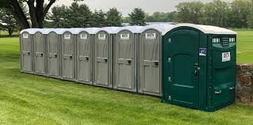

Regular Porta Potty Rentals
Standard porta potty rentals from EcoLoo are ideal for a broad spectrum of events and projects, including construction sites, garden weddings, festivals, and more. These basic yet essential units provide a sanitary and convenient restroom solution for your guests or staff.
Standard porta potties typically feature a high-volume waste tank, able to support 150 to 200 uses. They are equipped with essential sanitation features such as a flushing system, toilet paper dispenser, and a secure waste storage tank. These units are affordable, easy to set up, and provide a efficient restroom solution for events or projects with a limited duration or cost limitations.


High-End Portable Toilets
Deluxe restroom trailers from EcoLoo offer a luxurious and upscale portable restroom experience, ideal for high-end events, weddings, and corporate functions. These trailers surpass basic sanitation needs, delivering a suite of high-end comforts that upgrade the overall guest experience. Unlike standard porta-potties, deluxe restroom trailers include spacious interiors, climate-controlled environments, and high-end finishes that create a comfortable and inviting atmosphere.
Inside, you'll find well-appointed private stalls with full-sized doors for added privacy and soundproofing. The trailers are equipped with fully functional flushing systems, running water in sinks, plus additional comforts like sound systems and climate control. These features boost comfort levels and support enhanced sanitary practices. Many deluxe restroom trailers also offer ADA-compliant features, ensuring accessibility for all guests.
For events where luxury and sophistication are paramount, EcoLoo's deluxe restroom trailers offer a fusion of luxury and convenience, ensuring your guests have a remarkable and satisfying experience.